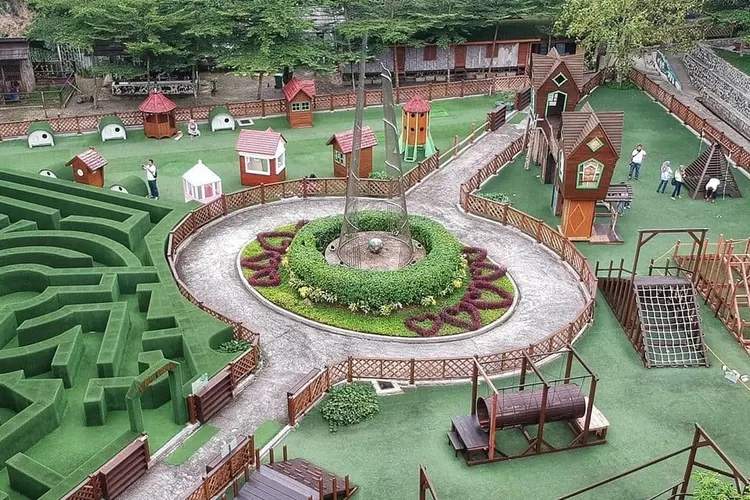

Taman Wisata Karang Resik
Taman Wisata Karang Resik sebuah taman hiburan di sisi Sungai Citanduy, Tasikmalaya.
Dengan luas 32 hektar taman ini menawarkan banyak kegiatan rekreasi yang asyik untuk dijajal bersama keluarga dan teman di akhir pekan.
Menariknya, taman ini memadukan beragam konsep sekaligus, ada berbagai wahan permainan serta wahana kolam renang.
Wisatawan bisa mendapatkan pengalaman rekreasi, wisata edukasi, wisata sejarah, hingga wisata kuliner sekaligus.

Gunung Galunggung
Gunung Galunggung Tasikmalaya, merupakan sebuah gunung berapi yang masih aktif hingga saat ini.
Namun menjadi tempat wisata terbaik untuk kamu yang menyukai suasana pegunungan.
Gunung Galunggung memiliki ketinggian mencapai 2.167 mdpl, memiliki dua puncak yakni,Puncak Dinding Ari,Puncak Beut Canar.
Pantai Karang Tawulan
Pantai Karang Tawulan, nama pantai ini mungkin masih rada asing di telinga para traveller.
Padahal, pantai karang tawulan bisa dikatakan salah satu pantai indah yang ada di jalur selatan wilayah jawa barat.
Daya tarik pantai ini ada di bentukan tebing yang sedikit menjorok ke tengah laut.
Dengan pantai pasir yang indah dan sedikit tersembunyi dibagian bawah kiri dan kanan tebing.
Curug Dengdeng
Curug Dengdeng sebagai Niagaranya Jawa Barat, karena memang karakteristik curugnya yang lebar ke samping
Curug Dengdeng Tasikmalaya ini mempunyai tiga tingkatan.
Yakni bagian atas dengan ketinggian 9 meter, bagian tengah 11 meter dan bagian bawah sekitar 13 meter.
Airnya sangat bersih dan jernih, namun jika musim hujan tiba maka debit air akan semakin deras.
Dan airnya akan berubah menjadi kecoklatan.
Hutan Pinus Cisayong
Hutan Pinus Cisayong sangat populer di Tasikmalaya sebagai tempat wisata hutan pinus yang amat indah.
Objek wisata ini biasa dijadikan tempat camping atau spot foto prewedding.
Selain itu di hutan pinus cisayong juga terdapat beberapa tempat ngopi atau cafe